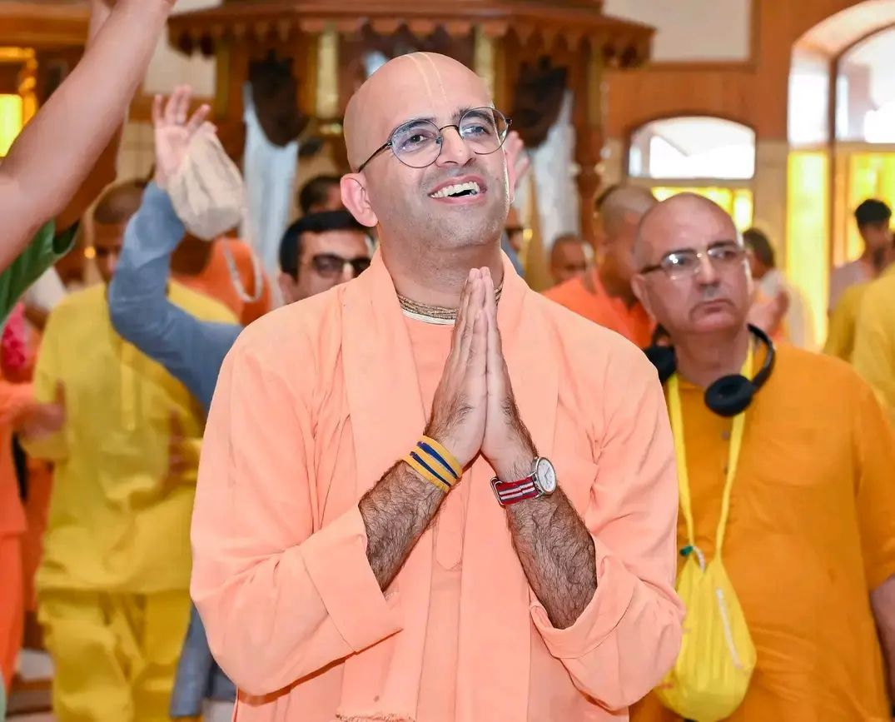

Welcome to the Ultimate Journey: The Complete Bhagavad Gita Course!
Discover the Eternal Wisdom of the Bhagavad Gita: Unleash Your Inner Potential with ISKCON's Ultimate Course!
Are you searching for profound meaning, purpose, and guidance in life? Look no further! Welcome to the
enlightening journey of the Bhagavad Gita, a timeless scripture that resonates with the hearts of the wise and
the curious alike.
Ignite Your Spirituality:
Step into the profound world of spirituality with ISKCON's Complete Bhagavad Gita Course. Delve deep into the
sacred verses and uncover the essence of life, existence, and the universe. This course empowers you to embrace
spirituality in a way that is relevant, relatable, and transformative.
Ancient Wisdom, Modern Relevance:
The Bhagavad Gita is not just an ancient text but a treasure trove of wisdom that transcends time. Our expert
instructors have brilliantly curated the course to present the Gita's timeless teachings in a modern context,
allowing you to seamlessly apply its principles to your everyday life, career, relationships, and personal
growth.
Unlock Your Inner Potential:
Through interactive lessons, thought-provoking discussions, and practical exercises, this course will help you
uncover your true potential. Learn the art of mindfulness, resilience, and inner peace as you navigate life's
challenges with newfound strength and clarity.
All-Inclusive for the Youth:
Calling all young minds! Whether you are a student, a professional, or simply seeking purpose, the Bhagavad Gita
has something extraordinary to offer you. Embrace a journey of self-discovery that aligns with your modern
lifestyle, making spirituality a dynamic and relevant aspect of your life.
Comprehensive Course Structure:
Our holistic curriculum is meticulously designed to cater to both beginners and those familiar with the Gita.
Each module is engaging and easily digestible, featuring captivating visuals, audio clips, and interactive
quizzes that make learning an absolute joy.
Join a Vibrant Community:
Connect with like-minded individuals from around the world, forming lifelong bonds with fellow seekers on the
path of spiritual awakening. Experience the warmth and guidance of ISKCON's expert mentors, who will be there to
support you throughout your journey.
Embrace the Essence of Bhagavad Gita Today:
Seize this golden opportunity to embark on a life-changing adventure. Register now for the Complete Bhagavad
Gita Course by ISKCON and set forth on a path of spiritual exploration, empowerment, and fulfillment!
Don't wait! Let the timeless wisdom of the Bhagavad Gita lead you towards a life of purpose, joy, and
inner
harmony. Reserve your spot now and witness the magic unfold!
Why this Course?
The impact of modern education and certain philosophical trends on religious
beliefs
varies
among individuals
and cultures. While education and philosophical advancements have contributed to the advancement of
science,
critical thinking, and intellectual exploration, some argue that they have also led to a decline in
religious
adherence and an increase in atheism. Here are some reasons why some people believe that modern
education
and
philosophical ideas may have contributed to a decline in religious beliefs:
Scientific Advancements: Modern education emphasizes scientific discoveries and
evidence-based
reasoning. As
scientific knowledge expands, some individuals may find it difficult to reconcile traditional
religious
beliefs
with scientific explanations, leading to a shift towards atheism.
Secularization: Modern education often promotes secularism, emphasizing the
separation
of
religious institutions
from the state and public life. This can lead to a decrease in religious influence in various
aspects of
society.
Thinking: Education encourages critical thinking and questioning of beliefs,
including
religious ones.
As individuals learn to analyze information critically, they may question the validity of religious
claims
and
opt for atheism or agnosticism.
Pluralism: Modern philosophy emphasizes the acceptance of diverse beliefs and
viewpoints,
leading
some individuals to adopt a relativistic or pluralistic approach to religion. They may view all
religious
beliefs as equally valid or choose not to adhere to any particular religious tradition.
Materialism and Consumerism: With the rise of modern consumerist culture, material
pursuits
and
individual
success are often prioritized over spiritual or religious values. This focus on material wealth and
success
may
contribute to a decline in interest in religious practices.
and Cultural Critiques: Modern education and philosophy have led to critical
analyses
of
religious
history and practices, exposing instances of intolerance, discrimination, and violence in the name
of
religion.
Such critiques can lead individuals to distance themselves from religious institutions.
Religious Fundamentalism: Paradoxically, some individuals, when exposed to secular
education or
ideas that
challenge their religious beliefs, may adopt a more rigid, fundamentalist stance. This, in turn, can
lead to
polarization and further alienation from those with differing beliefs.
It's important to note that while modern education and philosophical ideas may have contributed to
changes
in
religious beliefs, many people continue to find spiritual fulfillment and God-consciousness through
education
and philosophical exploration. For some, education and critical thinking can strengthen their faith
and
deepen
their understanding of spirituality.
Ultimately, religious beliefs are complex and influenced by numerous factors, including cultural
upbringing,
personal experiences, exposure to diverse ideas, and individual disposition. As societies progress,
it
is
essential to foster open dialogues that respect diverse beliefs and encourage a deeper understanding
of
different worldviews.
According to the World Health Organization, depression affects over 300 million people globally, and
it is
predicted to be the leading cause of disability by 2030
Across the globe, over 8 lakh individuals die by suicide every year. 1,64,033
suicide
deaths were recorded by the National Crime Records Bureau in India
Course instructor

HG Amogh Lila Prabhu is an Indian saint, social worker
and motivational speaker. He was born in Lucknow, Uttar Pradesh on 1 July 1980 to a religious Punjabi
family.
Currently, he is a vice president of Dwarka ISKCON temple. ISKCON is an
organization that propagates
Sanatana Dharma the world over, it is founded by Swami A.C. Bhaktivedanta Swami Prabhupada Ji.
HG Amogh Prabhu Ji, he is famous for his wonderful speeches on social media platforms. He has a
charming personality that captures the eyeballs.
After the completion of 12th standard which was in 2000, Amogh Lila ran away from home. However,
he came
back after four months and completed his further studies. He completed his graduation in engineering
in
computer science in 2004. And further did a job as a software engineer in a US-based MNC.
He had reached the project manager post when he left the job
(2004-2010). And after that, in 2010, he became a forever Hare Krishna Brahmachari by joining
ISKCON, at
the age of 29.